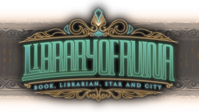

Placeholder box
Website developed by: John J. Lee
About Us
Joyous Lemur Design Co. was formed in 2021, founded by John Jonghoon Lee during his enrollment at
UNCC
in Class of 2019. Design compnay has created various webpage designs in the web designs class.
The initial intention of developing this website was formed after playing the game Library of
Ruina.
After playing the game, I became a huge fan of the game and decided to develop an interactive visual
novel website
for existing and new fans of Library of Ruina.
Website developed by: John J. Lee
Special thanks to: Project Moon
The copyright of contents used in the website belongs to Project Moon.